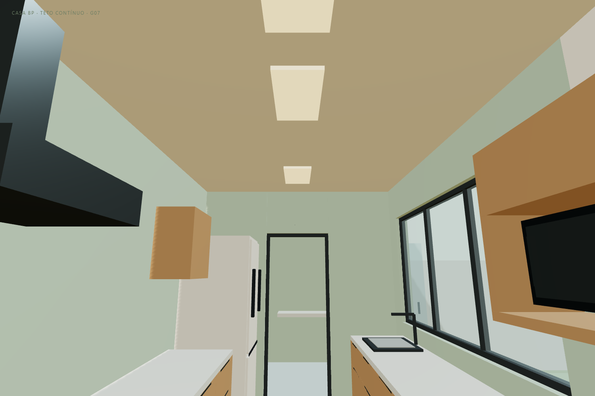
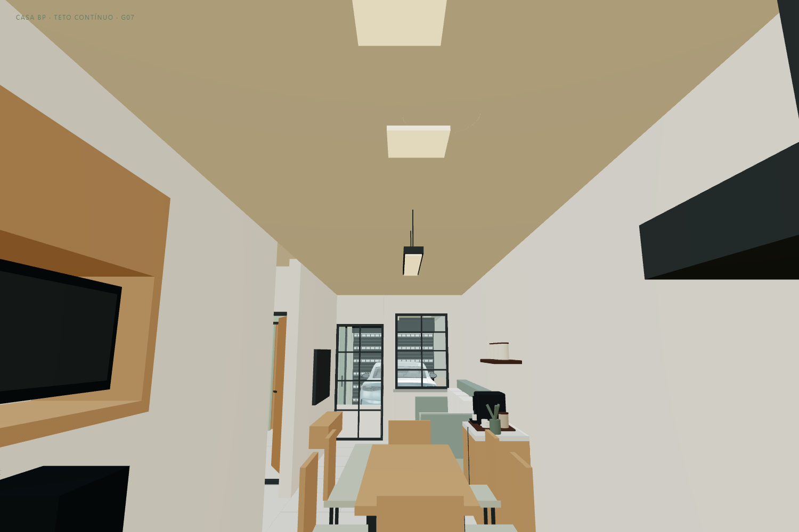

CASA BP · G07 · 11/11/2026
O ressalto mostrado nas imagens ficava no teto: a laje original e a cobertura da ampliação tinham faces inferiores em alturas diferentes no modelo. A proposta G07 cria um forro contínuo por baixo, da sala até o fim da cozinha, para esconder esse encontro e dar unidade ao ambiente integrado.
Ver teto contínuo em 3D · Tour atualizado · Modelo GLB G07

| Elemento | Hipótese do estudo |
|---|---|
| Ambientes | Sala, copa e cozinha com acabamento na mesma cota |
| Altura inferior do forro | 2,65 m acima da referência de piso do modelo |
| Faixa coberta pelo acabamento | 2,40 × 10,71 m; área bruta aproximada de 25,70 m² |
| Espessura desenhada | 2,5 cm, apenas para representação do acabamento |
| Laje existente desenhada | Face inferior a 2,70 m, mantida no modelo |
| Diferença visível no teto entre copa e cozinha | Zero na superfície do novo acabamento |
| Luminárias | Plafons ajustados abaixo do novo plano; cabos do pendente encurtados |
A cota de 2,65 m é uma referência visual, escolhida abaixo da laje desenhada. A espessura de 2,5 cm não dimensiona uma placa, perfis, tirantes, instalações ou o sistema completo. O levantamento real deve determinar o plano possível de acabamento e o material adequado para os ambientes.
Se houver viga abaixo dessa cota, será preciso rever a altura do conjunto ou estudar outra solução com o responsável técnico. O modelo não confirma a posição nem a seção de vigas reais. Não se propõe retirar, cortar ou raspar uma viga ou laje. A altura final depende de medidas no local, estrutura, fixações, instalações e altura útil.
A inclinação da cobertura da ampliação, a laje existente, as platibandas, calhas e drenagem permanecem como estavam no estudo anterior. O forro é uma camada interna de acabamento; a diferença entre coberturas fica por cima dele.

A opção de tubo solar já existente foi adaptada ao novo forro. Com ela desligada, a posição tem uma tampa no mesmo plano do acabamento. Com ela ligada, a tampa sai e o difusor aparece junto ao novo teto. Essa hipótese continua condicionada à avaliação da estrutura e impermeabilização; não se propõe outro furo na laje nesta revisão. Não houve cálculo luminotécnico.
Use Teto contínuo · cozinha para olhar para os fundos e Olhar para a copa para conferir a direção contrária. Essas vistas mantêm a cobertura ligada. Nas vistas sem cobertura, o forro desaparece junto com ela para permitir ver o mobiliário. O tour continua com 16 paradas e permite arrastar para olhar para cima.
Pisos, bancadas, mesa para seis, escritório, banheiro corrigido, closet, garagem e carro foram preservados. Esta revisão trata do ressalto do teto indicado nas imagens, sem alterar os níveis de piso.
Banheiro corrigido G06 · Escritório e café G05 · Copa e cozinha G04 · Carro “2024 BYD Seal”, Ddiaz Design, adaptado sob CC BY-NC-SA 4.0.